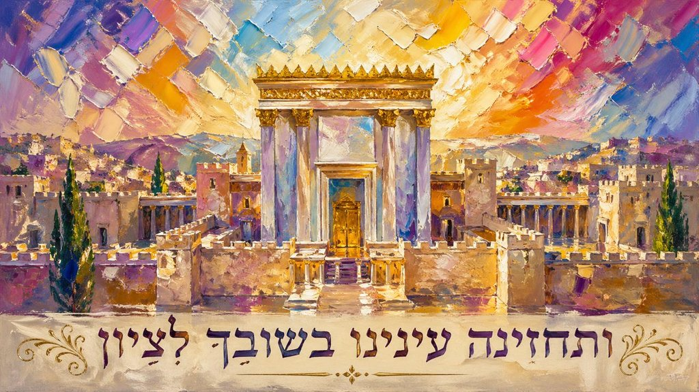

טוען...

הֲרֵינִי מַאֲמִין בֶּאֱמוּנָה שְׁלֵמָה בִּשְׁלֹשָׁה עָשָׂר עִקָּרִים שֶׁל הַתּוֹרָה הַקְּדוֹשָׁה.
יְהִי רָצוֹן מִלְּפָנֶיךָ ה׳ אֱלֹהֵינוּ וֵאלֹהֵי אֲבוֹתֵינוּ, שֶׁתָּכֹף יִצְרֵנוּ לַעֲבוֹדָתֶךָ כָּל יְמֵי חַיֵּינוּ תָּמִיד, אָמֵן כֵּן יְהִי רָצוֹן.
לְשֵׁם יִחוּד קֻדְשָׁא בְּרִיךְ הוּא וּשְׁכִינְתֵּיהּ, הֲרֵינִי בָא לְקַיֵּם מִצְוַת עֶשֶׂר זְכִירוֹת שֶׁיֵּשׁ לִזְכֹּר בְּכָל יוֹם, וְאֵלּוּ הֵן:
טוען...
שְׁמַע בְּנִי מוּסַר אָבִיךָ, וְאַל תִּטֹּשׁ תּוֹרַת אִמֶּךָ.
תִּתְנַהֵג תָּמִיד לְדַבֵּר כָּל דְּבָרֶיךָ בְּנַחַת — לְכָל אָדָם וּבְכָל עֵת, וּבָזֶה תִּנָּצֵל מִן הַכַּעַס, שֶׁהִיא מִדָּה רָעָה לְהַחֲטִיא בְּנֵי אָדָם. וְכֵן אָמְרוּ רַבּוֹתֵינוּ זִ"ל: כָּל הַכּוֹעֵס — כָּל מִינֵי גֵּיהִנּוֹם שׁוֹלְטִים בּוֹ, שֶׁנֶּאֱמַר: "וְהָסֵר כַּעַס מִלִּבֶּךָ וְהַעֲבֵר רָעָה מִבְּשָׂרֶךָ"; וְאֵין "רָעָה" אֶלָּא גֵּיהִנּוֹם, שֶׁנֶּאֱמַר: "וְגַם רָשָׁע לְיוֹם רָעָה".
וְכַאֲשֶׁר תִּנָּצֵל מִן הַכַּעַס, תַּעֲלֶה עַל לִבְּךָ מִדַּת הָעֲנָוָה, שֶׁהִיא מִדָּה טוֹבָה מִכָּל הַמִּדּוֹת טוֹבוֹת, שֶׁנֶּאֱמַר: עֵקֶב עֲנָוָה יִרְאַת ה׳.
וּבַעֲבוּר הָעֲנָוָה תַּעֲלֶה עַל לִבְּךָ מִדַּת הַיִּרְאָה, כִּי תִתֵּן אֶל לִבְּךָ תָּמִיד — מֵאַיִן בָּאתָ וּלְאָן אַתָּה הוֹלֵךְ; וְשֶׁאַתָּה רִמָּה וְתוֹלֵעָה בְּחַיֶּיךָ וְאַף כִּי בְּמוֹתָךְ; וְלִפְנֵי מִי אַתָּה עָתִיד לִתֵּן דִּין וְחֶשְׁבּוֹן — לִפְנֵי מֶלֶךְ הַכָּבוֹד.
וְכַאֲשֶׁר תַּחֲשֹׁב אֶת כָּל אֵלֶּה, תִּירָא מִבּוֹרְאֶךָ וְתִשָּׁמֵר מִן הַחֵטְא. וּבַמִּדּוֹת הָאֵלֶּה תִּהְיֶה שָׂמֵחַ בְּחֶלְקֶךָ.
וְעַתָּה בְּנִי, דַּע וּרְאֵה כִּי הַמִּתְגָּאֶה בְּלִבּוֹ עַל הַבְּרִיּוֹת — מוֹרֵד הוּא בְּמַלְכוּת שָׁמַיִם. וּבַמֶּה יִתְגָּאֶה לֵב הָאָדָם? אִם בְּעֹשֶׁר — "ה׳ מוֹרִישׁ וּמַעֲשִׁיר". אִם בְּכָבוֹד — "וְהָעֹשֶׁר וְהַכָּבוֹד מִלְּפָנֶיךָ". אִם בְּחָכְמָה — "מֵסִיר שָׂפָה לְנֶאֱמָנִים". נִמְצָא הַכֹּל שָׁוֶה לִפְנֵי הַמָּקוֹם, כִּי בְאַפּוֹ מַשְׁפִּיל גֵּאִים וּבִרְצוֹנוֹ מַגְבִּיהַּ שְׁפָלִים. לָכֵן הַשְׁפֵּל עַצְמְךָ וִינַשְּׂאֲךָ הַמָּקוֹם.
עַל כֵּן אֲפָרֵשׁ לְךָ אֵיךְ תִּתְנַהֵג בְּמִדַּת הָעֲנָוָה לָלֶכֶת בָּהּ תָּמִיד: כָּל דְּבָרֶיךָ יִהְיוּ בְנַחַת, וְרֹאשְׁךָ כָּפוּף; וְעֵינֶיךָ יַבִּיטוּ לְמַטָּה לָאָרֶץ וְלִבְּךָ לְמַעְלָה; וְכָל אָדָם יִהְיֶה גָּדוֹל מִמְּךָ בְּעֵינֶיךָ — אִם חָכָם אוֹ עָשִׁיר הוּא עָלֶיךָ לְכַבְּדוֹ; וְאִם רָשׁ הוּא וְאַתָּה עָשִׁיר אוֹ חָכָם מִמֶּנּוּ, חֲשֹׁב כִּי אַתָּה חַיָּב מִמֶּנּוּ וְהוּא זַכַּאי מִמְּךָ.
בְּכָל דְּבָרֶיךָ וּמַעֲשֶׂיךָ וּמַחְשְׁבוֹתֶיךָ וּבְכָל עֵת — חֲשֹׁב בְּלִבְּךָ כְּאִלּוּ אַתָּה עוֹמֵד לִפְנֵי הַקָּדוֹשׁ בָּרוּךְ הוּא וּשְׁכִינָתוֹ עָלֶיךָ, כִּי כְבוֹדוֹ מָלֵא הָעוֹלָם. וּדְבָרֶיךָ יִהְיוּ בְּאֵימָה וּבְיִרְאָה כְּעֶבֶד לִפְנֵי רַבּוֹ.
וֶהֱוֵי זָהִיר לִקְרוֹת בַּתּוֹרָה תָּמִיד אֲשֶׁר תּוּכַל לְקַיְּמָהּ. וְכַאֲשֶׁר תָּקוּם מִן הַסֵּפֶר — תְּחַפֵּשׂ בַּאֲשֶׁר לָמַדְתָּ אִם יֵשׁ בּוֹ דָּבָר אֲשֶׁר תּוּכַל לְקַיְּמוֹ. וּתְפַשְׁפֵּשׁ בְּמַעֲשֶׂיךָ בַּבֹּקֶר וּבָעֶרֶב, וּבָזֶה יִהְיוּ כָּל יָמֶיךָ בִּתְשׁוּבָה.
וְהָסֵר כָּל דִּבְרֵי הָעוֹלָם מִלִּבְּךָ בְּעֵת הַתְּפִלָּה, וְהָכֵן לִבְּךָ לִפְנֵי הַמָּקוֹם בָּרוּךְ הוּא. וְטַהֵר רַעְיוֹנֶיךָ, וַחֲשֹׁב הַדִּבּוּר קֹדֶם שֶׁתּוֹצִיאֶנּוּ מִפִּיךָ.
תִּקְרָא הָאִגֶּרֶת הַזֹּאת פַּעַם אַחַת בְּשָׁבוּעַ וְלֹא תִפְחֹת, לְקַיְּמָהּ וְלָלֶכֶת בָּהּ תָּמִיד אַחַר הַשֵּׁם יִתְבָּרַךְ; לְמַעַן תַּצְלִיחַ בְּכָל דְּרָכֶיךָ, וְתִזְכֶּה לָעוֹלָם הַבָּא הַצָּפוּן לַצַּדִּיקִים. וּבְכָל יוֹם שֶׁתִּקְרָאֶנָּה יַעֲנוּךָ מִן הַשָּׁמַיִם כַּאֲשֶׁר יַעֲלֶה עַל לִבְּךָ לִשְׁאֹל עַד עוֹלָם. אָמֵן סֶלָה.
— נָאֻם מֹשֶׁה בַּר נַחְמָן זַצַּ״ל, כְּתָבָהּ לְבֵן גְּדוֹלוֹ בִּהְיוֹתוֹ בְּגֵרוֹנָה